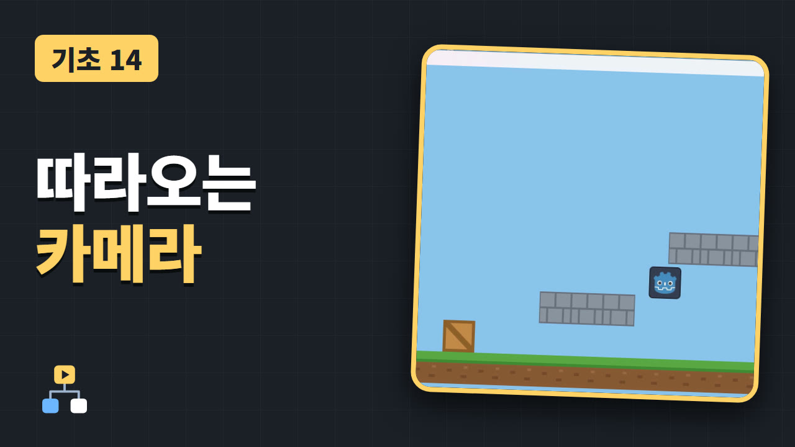

주인공을 따라오는 카메라 (Camera2D)
Godot 기초 14

주인공을 따라오고, 맵 끝에서는 멈추는 카메라를 답니다.
Camera2D를 주인공의 자식으로 넣고, Limit으로 맵 밖이 보이지 않게 하고, Position Smoothing으로 부드럽게 따라오게 만듭니다.
시작 프로젝트 받기 (.zip)
영상은 곧 공개됩니다
여는 방법
- 받은 파일의 압축을 풉니다.
- Godot 4.7.2을 켜고, 프로젝트 매니저에서 "가져오기"를 누릅니다.
- 압축을 푼 폴더 안의
project.godot을 고릅니다. - 에디터가 열리면 영상을 처음부터 따라 합니다.
시작 프로젝트는 영상이 시작할 때의 상태입니다. 영상에서 쓰는 그림과 미리 만들어 둔 씬이 들어 있어서, 이것을 열면 영상을 그대로 따라 할 수 있습니다. 13편의 맵을 화면 두 배 길이로 늘려 둔 상태입니다.